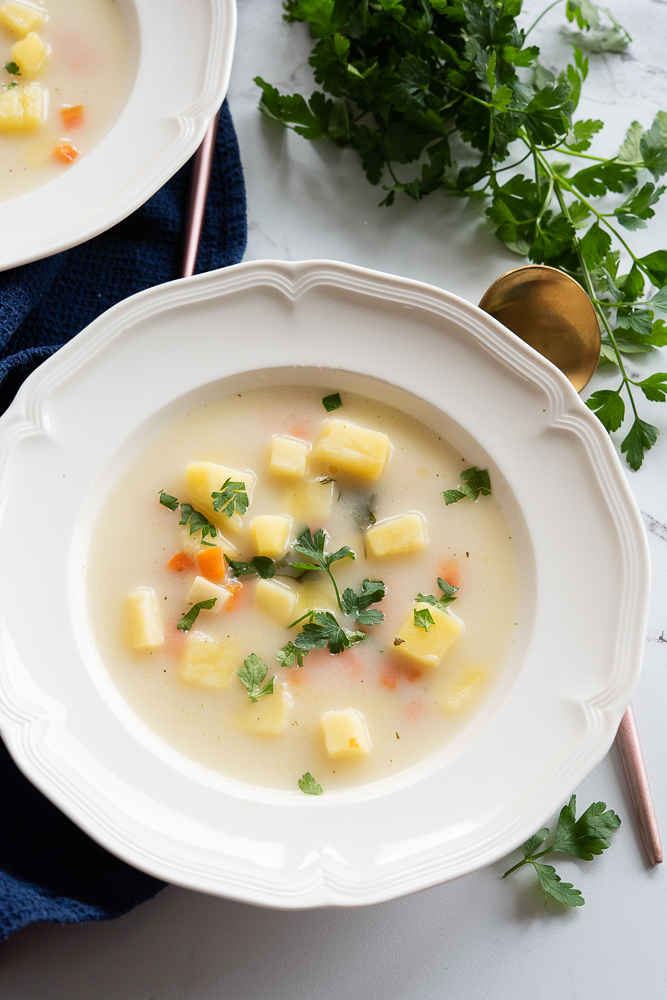

Tkaczyk News
SERWIS INFORMACYJNY
Przepis na świetną zupę ziemniaczaną
SKŁADNIKI: 2,5 litry wody, 3 duże marchewki, 1 seler, 2 pietruszki korzeń, 2 łyżki natki pietruszki, 1 łyżka koperku, 1 łyżeczka soli, opcjonalnie 1 łyżeczka vegety, większa szczypta pieprzu czarnego, opcjonalnie 1 łyżeczka suszonego lubczyku, 1 ząbek czosnku, 800 g ziemniaków, 100 ml śmietanki kremówki 30% lub 2 łyżki gęstej śmietany 18%, 1 łyżeczka mąki pszennej
PRZYGOTOWANIE: Zupę ziemniaczaną zaczynamy od nastawienia wody (2,5-3 l) w większym garnku. Marchewki (3 duże sztuki) oraz pietruszki (2 sztuki) kroimy w kosteczkę. Seler (mała sztuka) kroimy na większe kawałki. Wrzucamy do gotującej się zupy. Dodajemy także sól (1 łyżeczka), pieprz (większa szczypta), przeciśnięty przez praskę czosnek (1 większy ząbek), posiekaną natkę pietruszki oraz koperek. Opcjonalnie dodajemy vegetę oraz suszony lub świeży lubczyk (1 łyżeczka). Gotujemy na średnim ogniu przez 30-40 minut. Ziemniaki (około 800 g) obieramy, kroimy w kosteczkę. Na rozgrzanej patelni z małą ilością oleju dodajemy pokrojone ziemniaki. Smażymy na średnim ogniu przez około 5-7 minut co chwilę mieszając. Dodajemy je do zupy. Gotujemy przez około 15 minut. Do większego kubka odlewamy chochelkę zupy. Dodajemy śmietankę (100 ml) oraz mąkę (1 łyżeczka) i całość mieszamy. Wlewamy do zupy i gotujemy jeszcze przez kilka minut na małym ogniu. Zupę ziemniaczaną doprawiamy do smaku – solą, pieprzem, świeżymi ziołami (posiekaną natką pietruszki, koperkiem czy lubczykiem). Ewentualnie doprawiamy odrobiną magi.